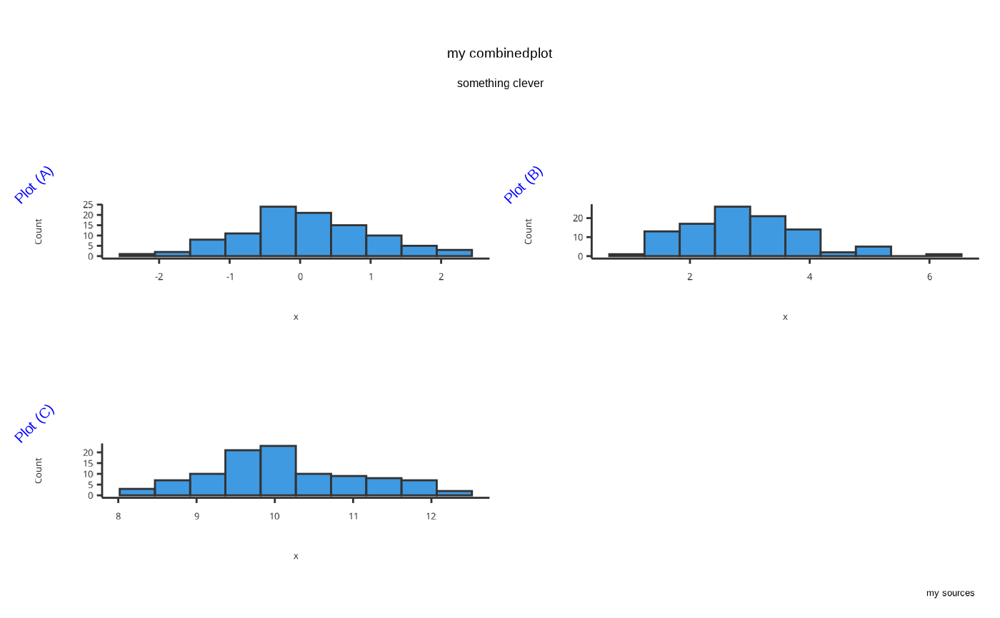
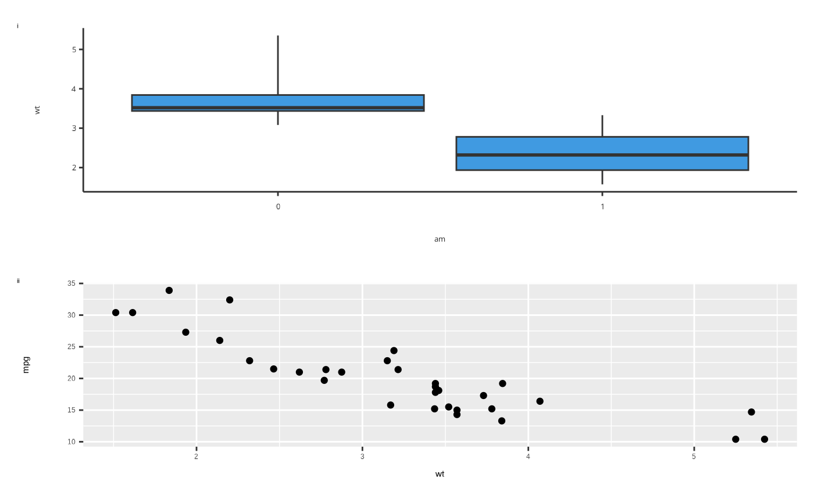

Create a plot grid using the patchwork::wrap_plots() function. The required
arguments are supplied through the PlotGridConfiguration object.
References
For more, see: https://patchwork.data-imaginist.com/articles/patchwork.html
Examples
library(ggplot2)
library(tlf)
# only `{tlf}` ---------------------
# plots to be arranged in a grid
set.seed(123)
ls_plots <- list(
plotHistogram(x = rnorm(100)),
plotHistogram(x = rnorm(100, mean = 3)),
plotHistogram(x = rnorm(100, mean = 10))
)
#> Warning: Ignoring unknown parameters: `size`
#> Warning: Ignoring unknown parameters: `size`
#> Warning: Ignoring unknown parameters: `size`
# create an instance of plot configuration class
plotGridObj <- PlotGridConfiguration$new(plotList = ls_plots)
# specify further customizations for the plot grid
plotGridObj$title <- "my combined plot"
plotGridObj$subtitle <- "something clever"
plotGridObj$caption <- "my sources"
plotGridObj$nColumns <- 2L
plotGridObj$tagLevels <- "A"
plotGridObj$tagPrefix <- "Plot ("
plotGridObj$tagSuffix <- ")"
plotGridObj$tagColor <- "blue"
plotGridObj$tagSize <- 15
plotGridObj$tagAngle <- 45
plotGridObj$tagPosition <- TagPositions$top
plotGridObj$titleHorizontalJustification <- HorizontalJustification$middle
plotGridObj$subtitleHorizontalJustification <- HorizontalJustification$middle
# plot the grid
plotGrid(plotGridObj)

# `{tlf}` and `{ggplot2}` ---------------------
# `{tlf}` plot
set.seed(123)
p1 <- plotBoxWhisker(mtcars,
dataMapping = BoxWhiskerDataMapping$new(x = "am", y = "wt"), outliers = FALSE
)
# custom `{ggplot2}` plot
set.seed(123)
p2 <- ggplot(mtcars, aes(wt, mpg)) +
geom_point()
# create an instance of plot configuration class
plotGridObj2 <- PlotGridConfiguration$new(list(p1, p2))
# specify further customizations for the plot grid
plotGridObj2$nColumns <- 1L
plotGridObj2$tagLevels <- "i"
# plot the grid
plotGrid(plotGridObj2)
